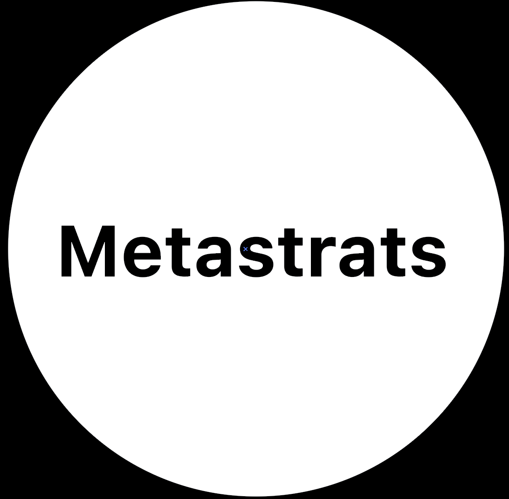
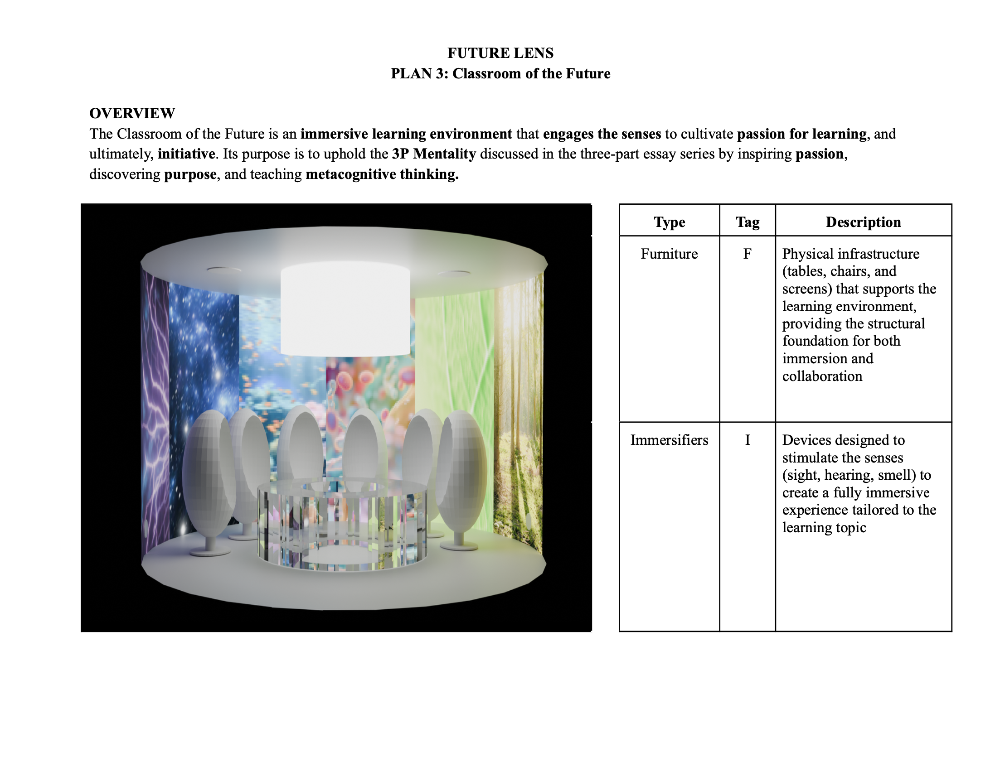
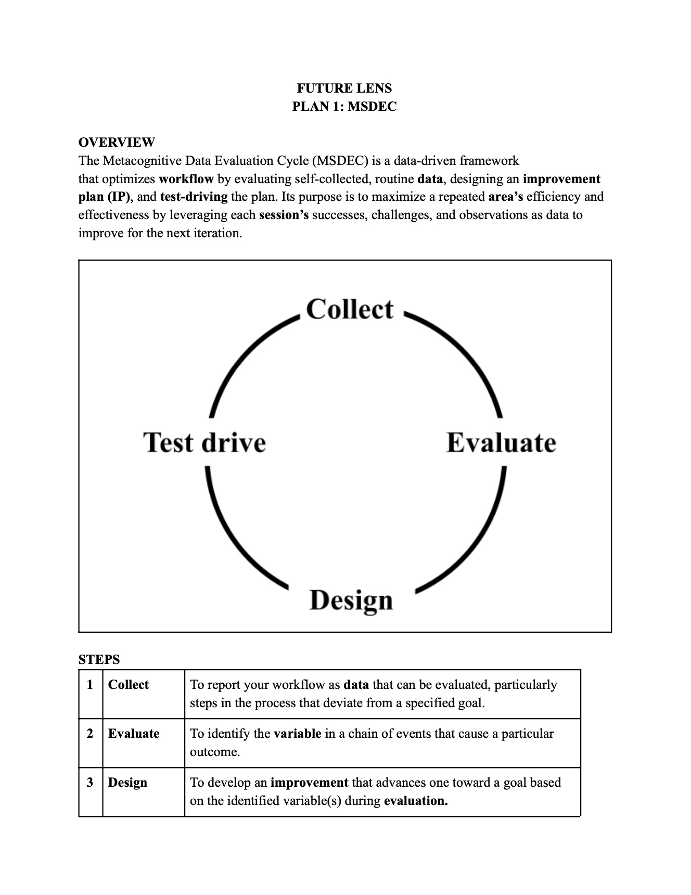
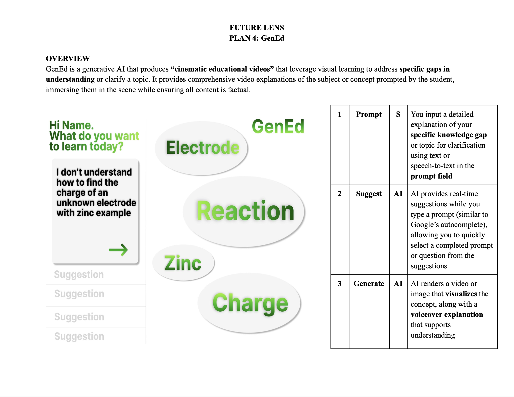
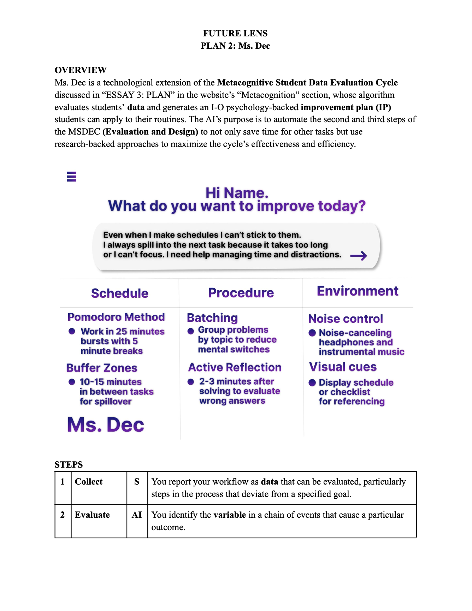

Future
Lens
"GenEd"
"MSDEC"
"MSDEC x AI"
"Classroom of the Future"
"Metastrats"
A lineup of EdTech concept plans and ‘Metastrats’
that offer a lens into future educational technology
and metacognitive workflow strategies.
From the Classroom of the Future to the MSDEC,
the frameworks integrate visual and self-regulated
learning to cultivate passion, and ultimately,
initiative. Although each plan is purely conceptual
and not backed by extensive research, it does lay a
foundation for prospective EdTech that could be
implemented into next-generation classrooms.
Diagrams
Plans
    